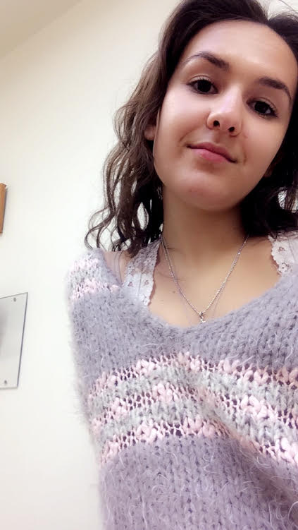
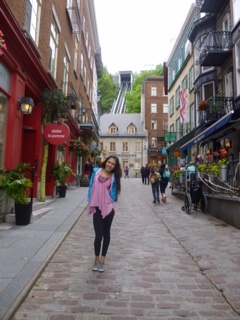
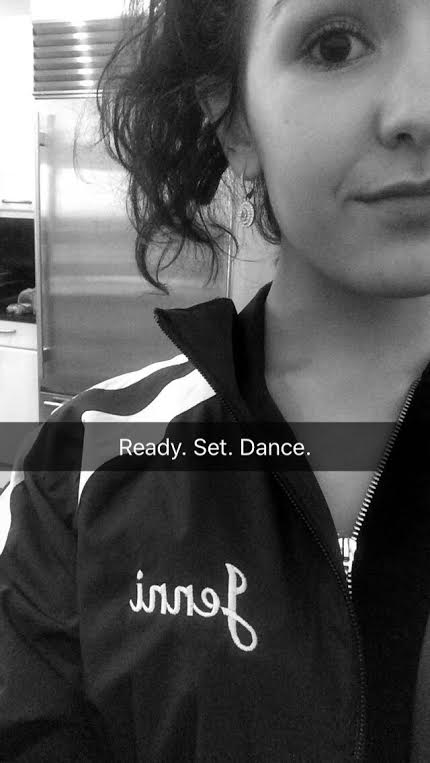

I am a 17 year old teenage girl who resides in Tenafly, NJ. I am entering my senior year of high school, and I am more than ready to enter college! I would like to stay close to home; hence, Barnard College is at the top of my list!
I am outgoing; hence, most tell me I am loud, but more importantly, I am extremely open, caring, and understanding. I am a very good listener (almost a proffessional), and I love to meet new people. My friends would descirbe me as a organized, love-bug; similarly, my family would describe me as fun-loving, confident, and smiley.
Education
I attend Tenafly High School, and have taken the most challenging courses avaible. In the upcoming year, I will be taking 4 AP classes, two electives, and have been chosen to participate in my school's PEERS program.
Extracurriculars
I am a competitive ballroom dancer, such as what can be seen on "Dancing With the Stars." I have recieved a myriad of first place medals and trophies. I plan to continue my career throughout college. Click Here to watch ballroom dancing competitions!
I have gotten my Zumba license; hence, I am a Zumba lover and can teach anyone how to shake!
Clubs
Founder and President of the Children's Aid and Family Services Club, which focuses on children and teenagers with developmental disabilities
Vice-President of the Russian Cultural Club
Member of the Tutoring Club
Favorites
Favorite Fruit: Pineapple
Favorite Veggie: Eggplant or Sweet Potato, which is a root-veggie
Favorite Movie: The Last Song
Favorite Book: The Scarlet Letter By: Nathaniel Hawthorne
Favorite Animal: Monkeys and Dogs
Favorite City: New York City


